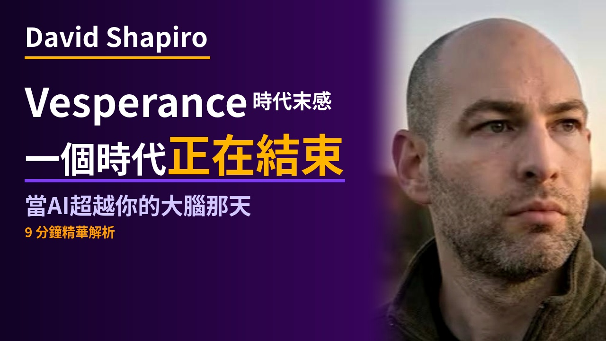

David Shapiro — 2年內全部結束 ⏳ 腳本草稿
📋 草稿審閱
請確認以下三件事，確認後我開始製作：
1️⃣ 腳本方向 — 內容 OK？有需要修改的地方嗎？
2️⃣ 封面文案 — 選擇 A / B / C 哪個版本？
3️⃣ 背景圖生成方式 — (D) DALL-E 3 自動生成 / (G) Google Imagen 4 生成
請確認以下三件事，確認後我開始製作：
1️⃣ 腳本方向 — 內容 OK？有需要修改的地方嗎？
2️⃣ 封面文案 — 選擇 A / B / C 哪個版本？
3️⃣ 背景圖生成方式 — (D) DALL-E 3 自動生成 / (G) Google Imagen 4 生成

🖼 YouTube 封面提案
三版封面設計供參考，回覆選擇 A / B / C
提案 A
「我們剩下 2年」— 衝擊數字直打，AI時代最後的貢獻
提案 B
「AI 2年後超越人類」— 超指數成長視角，你準備好了嗎
提案 C

「Vesperance 時代末感」— 情感視角，一個時代正在結束
🎨 背景圖場景描述（Imagen 4）
確認場景描述後告知「確認」，再選 D/G 開始生成背景圖
00
開場
一名沉思的作家坐在精緻的辦公桌前，照片真實感極高，採用電影視覺效果的廣角鏡頭拍攝。作家沐浴在冷藍白色的 LED 照明下，周圍擺滿了書籍和筆記，思考著最近貢獻的影響力；他身後的大窗戶露出高科技的城市景觀。
01
什麼是 Vesperance
在富有戲劇性和未來感的城市景觀邊緣，一個人站立在那裡，被冷白色熒光燈照亮。這個場景如電影般真實，寬闊的視角顯示他深思的模樣，凝望著象徵快速變化的天際線，喚起對過去的懷念與變遷的感受。
02
AI的超指數成長
大規模、最先進的數據中心充滿強大的 GPU，在冷白色的 LED 照明下，真實展示如同歷史專案（阿波羅計畫、曼哈頓計畫）般的 AI 發展規模，場景中充滿忙碌而嗡嗡作響的數位進步核心。
03
認知過剩時代
描繪一個繁忙的未來辦公空間，照片真實感極高，電影效果寬畫幅鏡頭。在冷白色光線下，年輕專業人士正在經歷認知過載；辦公空間中有全息顯示屏，快速變化的資訊和數據充斥其中。
04
我們能做什麼
在一個現代化、寬敞的圖書館中，一位富有創意的人被高聳的書架環繞，藍白熒光燈照射下探索講故事的無限可能；空氣中彌漫著數字文字和數字，象徵著無限的創意潛力。
05
結語
在冷藍白色燈光下，一名沉著的人站在橋上眺望未來城市，照片真實感極高，視角寬闊，象徵著新工業革命的開端，於科技進步的宏偉中找到方向和穩定。
⚠️ 確認場景描述後，告知選擇背景圖生成方式：(D) DALL-E 3 自動生成 / (G) Google Imagen 4 腳本生成
📝 播客腳本（草稿）
載入中…
{kind=link}
{kind=link}
{kind=link}